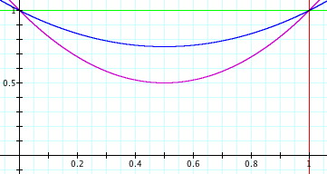
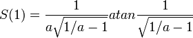

12.19.11
Posted in math, programming at 5:04 pm by danvk
Over the past two months, I’ve participated in Andrew Ng’s online Stanford Machine learning class. It’s a very high-level overview of the field with an emphasis on applications and techniques, rather than theory. Since I just finished the last assignment, it’s a fine time to write down my thoughts on the class!
Overall, I’ve learned quite a bit about how ML is used in practice. Some highlights for me:
- Gradient descent is a very general optimization technique. If you can calculate a function and its partial derivatives, you can use gradient descent. I was particularly impressed with the way we used it to train Neural Networks. We learned how the networks operated, but had no need to think about how to train them — we just used gradient descent.
- There are many advanced “unconstrained optimization” algorithms which can be used as alternatives to gradient descent. These often have the advantage that you don’t need to tune parameters like a learning rate.
- Regularization is used almost universally. I’d previously had very negative associations with using high-order polynomial features, since I most often saw them used in examples of overfitting. But I realize now that they are quite reasonable to add if you also make good use of regularization.
- The backpropagation algorithm for Neural Networks is really just an efficient way to compute partial derivatives (for use by gradient descent and co).
- Learning curves (plots of train/test error as a function of the number of examples) are a great way to figure out how to improve your ML algorithm. For example, if your training and test errors are both high, it means that you’re not overfitting your data set and there’s no point in gathering more data. What it does mean is that you need to add more features (e.g. the polynomial which I used to fear) in order to increase your performance.
The other takeaway is that, as in many fields, there are many “tricks of the trade” in Machine Learning. These are bits of knowledge that aren’t part of the core theory, but which are still enormously helpful for solving real-world problems.
As an example, consider the last problem in the course: Photo OCR. The problem is to take an image like this:
and extract all the text: “LULA B’s ANTIQUE MALL”, “LULA B’s”, “OPEN” and “Lula B’s”. Initially, this seems quite daunting. Machine Learning is clearly relevant here, but how do you break it down into concrete problems which can be attacked using ML techniques? You don’t know where the text is and you don’t even have a rough idea of the text’s size.
This is where the “tricks” come in. Binary classifiers are the “hammer” of ML. You can write a binary classifier to determine whether a fixed-size rectangle contains text:
| Positive examples |
 |
| Negative examples |
 |
You then run this classifier over thousands of different “windows” in the main image. This tells you where all the bits of text are. If you ignore all the non-contiguous areas, you have a pretty good sense of the bounding boxes for the text in the image.
But even given the text boxes, how do you recognize the characters? Time for another trick! We can build a binary classifier to detect a gap between letters in the center of a fixed-size rectangle:
| Positive examples |
 |
| Negative examples |
 |
If we slide this along, it will tell us where each character starts and ends. So we can chop the text box up into character boxes. Once we’ve done that, classifying characters in a fixed-size rectangle is another concrete problem which can be tackled with Neural Networks or the like.
In an ML class, you’re presented with this pipeline of ML algorithms for the Photo OCR problem. It makes sense. It reduces the real-world problem into three nice clean, theoretical problems. In the class, you’d likely spend most of your time talking about those three concrete problems. In retrospect, the pipeline seems as natural as could be.
But if you were given the Photo OCR problem in the real world, you might never come up with this breakdown. Unless you knew the trick! And the only way to learn tricks like this is to see them used. And that’s my final takeaway from this practical ML class: familiarity with a vastly larger set of ML tricks.
Permalink
12.26.09
Posted in math, programming at 10:45 am by danvk
In a previous post, I discussed downloading several years’ worth of New York Times Crosswords and categorizing them by day of week. Now, some analysis!
Here were the most common words over the last 12 years, along with the percentage of puzzles in which they occurred:
| Percentage |
Word |
Length |
| 6.218% |
ERA |
3 |
| 5.703% |
AREA |
4 |
| 5.413% |
ERE |
3 |
| 5.055% |
ELI |
3 |
| 4.854% |
ONE |
3 |
| 4.585% |
ALE |
3 |
| 4.496% |
ORE |
3 |
| 4.361% |
ERIE |
4 |
| 4.339% |
ALOE |
4 |
| 4.317% |
ETA |
3 |
| 4.317% |
ALI |
3 |
| 4.227% |
OLE |
3 |
| 4.205% |
ARE |
3 |
| 4.138% |
ESS |
3 |
| 4.138% |
EDEN |
4 |
| 4.138% |
ATE |
3 |
| 4.048% |
IRE |
3 |
| 4.048% |
ARIA |
4 |
| 4.004% |
ANTE |
4 |
| 3.936% |
ESE |
3 |
| 3.936% |
ENE |
3 |
| 3.914% |
ADO |
3 |
| 3.869% |
ELSE |
4 |
| 3.825% |
NEE |
3 |
| 3.758% |
ACE |
3 |
(you can click column headings to sort.)
So “ERA” appears, on average, in about 23 puzzles per year. How about if we break this down by day of week? Follow me past the fold…
Read the rest of this entry »
Permalink
11.05.09
Posted in astronomy, math at 5:39 pm by danvk
As we approach the winter solstice, the days get shorter and shorter. There’s a common misconception about how quickly this change happens. Most people know that:
- The summer solstice (June 21) is the longest day of the year.
- The winter solstice (December 21) is the shortest day of the year.
- The days get shorter between Summer and Winter.
- The days get longer between Winter and Summer.
Many people take these four pieces of information and assume that the day length changes like this over the course of the year:
(The x-axis is the date. The y-axis is length of the day in hours.)
This is consistent with the four pieces of information, but is incorrect! There aren’t many sharp edges like that in Physics. Reality is much smoother:
The length of the day slowly increases as we approach the summer solstice, then slowly decreases as we leave it. This is great — it means that there are lots of long days in the summer. As we get to the autumnal equinox, the rate of change hits a maximum. The same thing happens around the winter solstice, only in reverse.
The summer solstice is the longest day of the year, but not by much! Here’s some day lengths for San Francisco:
| Date |
Day Length |
Difference |
| Jun 18, 2009 |
14h 46m 45s |
+ 09s |
| Jun 19, 2009 |
14h 46m 51s |
+ 06s |
| Jun 20, 2009 |
14h 46m 54s |
+ 02s |
| Jun 21, 2009 |
14h 46m 54s |
< 1s |
| Jun 22, 2009 |
14h 46m 50s |
− 03s |
| Jun 23, 2009 |
14h 46m 43s |
− 06s |
| Jun 24, 2009 |
14h 46m 33s |
− 10s |
The lengths of the days around the solstice differ by only a few seconds! On the other hand, here are some day lengths around the autumnal equinox (September 22):
| Date |
Day Length |
Difference |
| Sep 19, 2009 |
12h 15m 35s |
− 2m 24s |
| Sep 20, 2009 |
12h 13m 10s |
− 2m 24s |
| Sep 21, 2009 |
12h 10m 46s |
− 2m 24s |
| Sep 22, 2009 |
12h 08m 21s |
− 2m 24s |
| Sep 23, 2009 |
12h 05m 56s |
− 2m 24s |
| Sep 24, 2009 |
12h 03m 32s |
− 2m 24s |
| Sep 25, 2009 |
12h 01m 07s |
− 2m 24s |
The length of each day changes by several minutes in September. Over a single week the day gets a whole 15 minutes shorter!
note: the interactive graphs are dygraphs, a JS library I created. Check it out!
Permalink
08.08.09
Posted in boggle, math, programming at 10:35 am by danvk
Why is finding the highest-scoring Boggle board so difficult? It’s because there are so many boards to consider: 2^72 for the 4×4 case and 2^40 for the 3×3 case. At 10,000 boards/second the former corresponds to about 2 billion years of compute time, and the latter just two years. Just enumerating all 2^72 boards would take over 100,000 years.
So we have to come up with a technique that doesn’t involve looking at every single board. And I’ve come up with just such a method! This is the “exciting news” I alluded to in the last post.
Here’s the general technique:
- Find a very high-scoring board (maybe this way)
- Consider a large class of boards
- Come up with an upper bound on the highest score achieved by any board in the class.
- If it’s lower than the score in step #1, we can eliminate all the boards in the class. If it’s not, subdivide the class and repeat step #2 with each subclass.
Classes of Boards
By “class of boards”, I mean something like this:
| {a,e,i,o,u} |
{a,e,i,o,u} |
r |
| {b,c,d,f,g,h} |
a |
t |
| d |
e |
{r,s,t,v} |
The squares that contain a set of letters can take on any of those letters. So this board is part of that class:
and so is this:
All told, there are 5 * 5 * 6 * 4 = 600 boards that are part of this class, each with its own score. Other fun classes of boards include “boards with only vowels” (1,953,125 members) and “boards with only consonants” (794,280,046,581 members).
Follow me past the fold for more…
Read the rest of this entry »
Permalink
02.22.09
Posted in finance, math at 2:51 pm by danvk
The S&P 500 certainly hasn’t made anyone rich over the last year:

Most people see this and think “an investment one year ago would have lost 45% of its value”. Others think “great, now stocks are all cheaper!”
In reality, most ordinary people invest portions of their paychecks, either through their 401(k) or a personal account. This means they’re doing time averaging. Sure, investments when the market was up aren’t doing well. But investments when the market was down are doing just fine.
This is all kind of wishy-washy, though. Let’s try to quantify it. Suppose a market drop and recovery looks like a parabola:

The prices here are parabolas

for various values of a. a=0 means the market is flat. a=0.5 means the market loses 50% of its value.
If you invest dt dollars in this market at each point in time, you can work out a nasty integral and show that the number of shares you have at time t is:


and hence the value of your shares at the end is:

Here’s what that looks like:

The x-axis is a, the fraction by which the market drops. The y-axis is your total return on investment. If the market drops by 50% (a=0.5) then your total return on investment is around 55%. With time-averaging, the more the market drops, the better you do.
This makes a lot of sense if you think about it. Say the market drops 99.9% and then recovers. The shares you bought when it was at its bottom earned you a return of 1000x. Investing at the bottom is important! You should keep investing, even as the market drops. If you don’t, you’ll miss that bottom.
Permalink
« Previous entries
Next Page »